How to rotate an object along an edge in Blender
Published: 2025-07-15
Anyone doing serious 3D design in Blender will eventually encounter the need to rotate objects around an arbitrary axis. In my case, it happened while trying to accurately animate the left and right flaps of an aircraft model. The default rotation axis along the Y direction passed through the center of the flap, causing it to detach from the aircraft during rotation, as shown below. Naturally, this resulted in unrealistic and physically inaccurate flap movement, so I had to adjust the rotation axis.
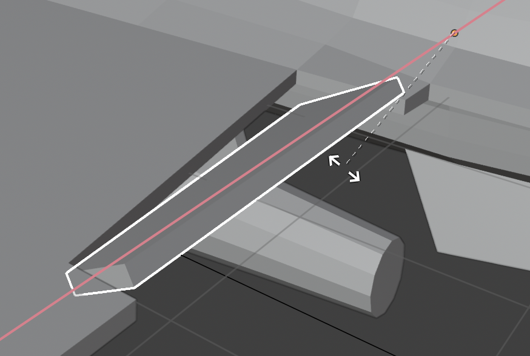
Method-1: Rotation by changing the coordinate frame
This method allows you to define an arbitary coordinate frame in Blender, and rotate the object with respect to it. Note that we’re not changing the object’s local axes (which is covered in Model-3), so this is only useful if you just need to rotate the object in Blender. Follow the steps below.
- Switch to the
Edit Mode (Tab)and select ( hold downCmd (Mac)orCtrl (Windows)and click) the vertices of the object that will present your new axis.
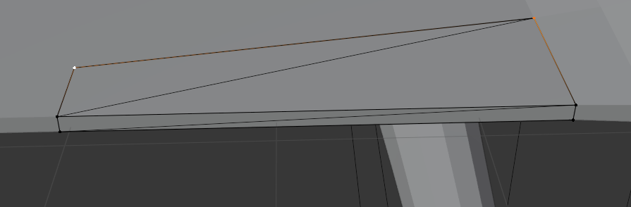
- Go to the orientation menu and press
+to create a new orientation based on your selection.
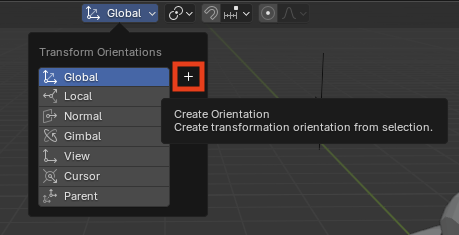
- Set the 3D cursor to this selection by either using the shortcut
(
Shift + Right Click) or the from the left menu.
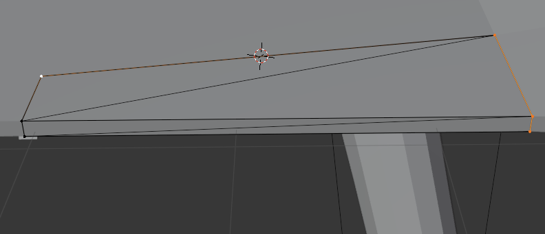
- Set the transformer pivot to the 3D cursor.
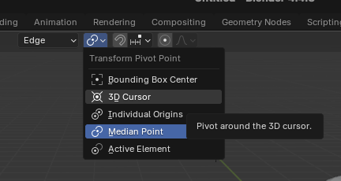
- Finally, go back the
Object Modeand select the object. Now you can rotate the object along this edge axis using X, Y, Z keys when rotating.
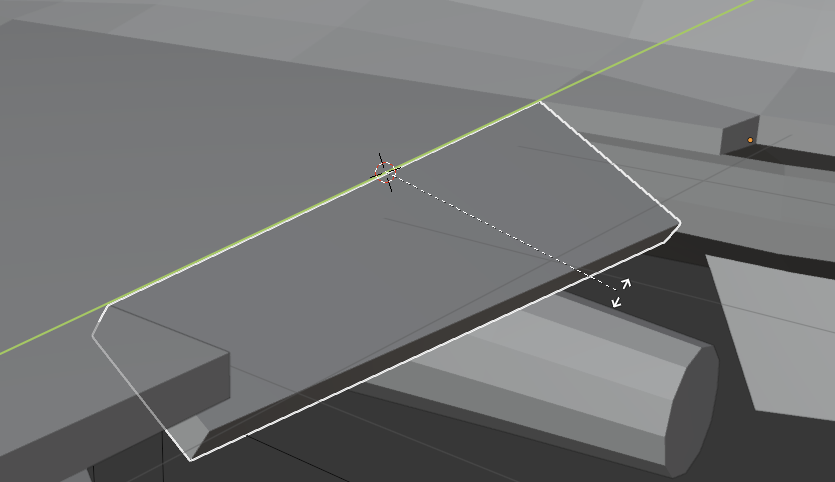
Method-2: Via an empty parent element
The Empty object in Blender is a powerful tool that
allows you to group and manage multiple objects, making it easy to
modify them all at once. The idea here is to create an empty
Plane Axes and parent the object you’d like to rorate to
it. You can position the plane axes so that one axis aligns with the
edge of the object you want to rotate. Empty objects are not rendered,
but when you move the parent element along its aligned axis, the
attached object rotates accordingly. Here are the steps to achive
this.
- Add an Empty Plane Axes.
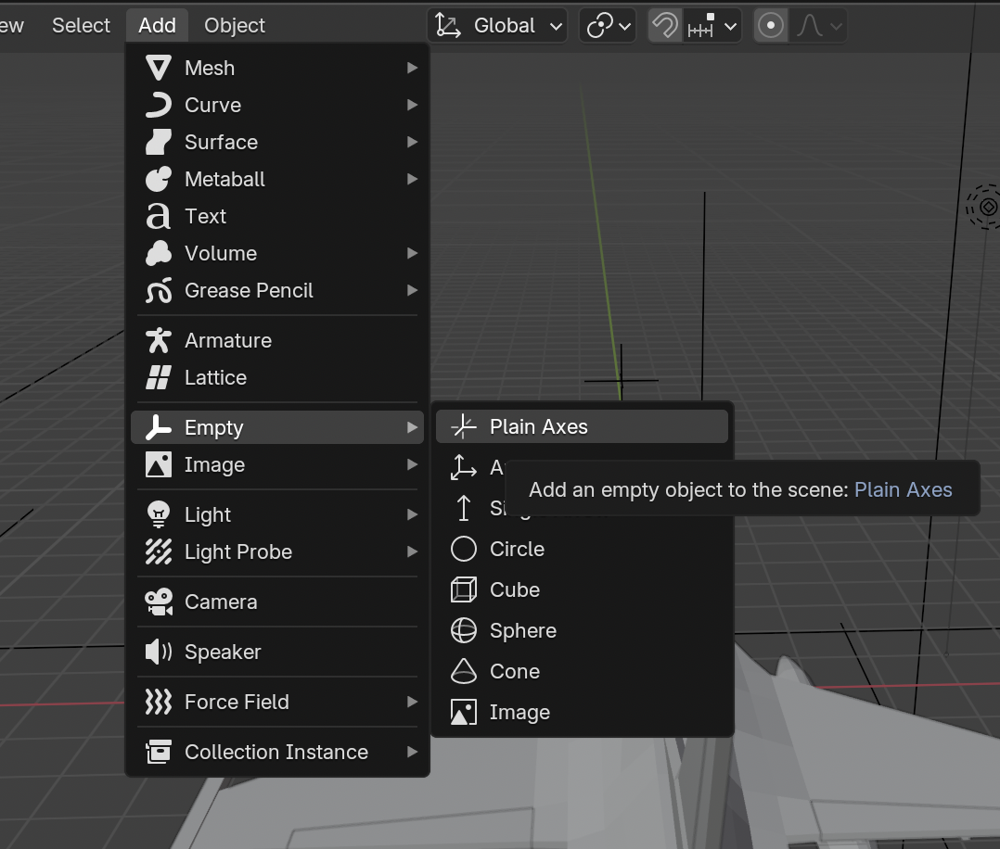
- Align one of the axes of the empty object with the edge of the
original object you want to rotate. You can select the empty object and
press
Gto move orRto rotate it freely. (While holdingGorR, pressX,Y, orZto constrain the movement or rotation along those axes.) Use the viewport in the top-left corner to view the empty object in theXY,YZ, andXZplanes for more accurate placement.
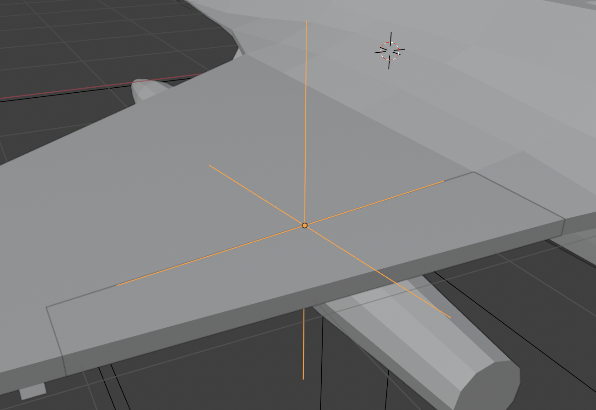
- In the
Object Mode, first select the object, then hold downShiftand select the empty object. Then pressCmd + P. From the menu, click object.
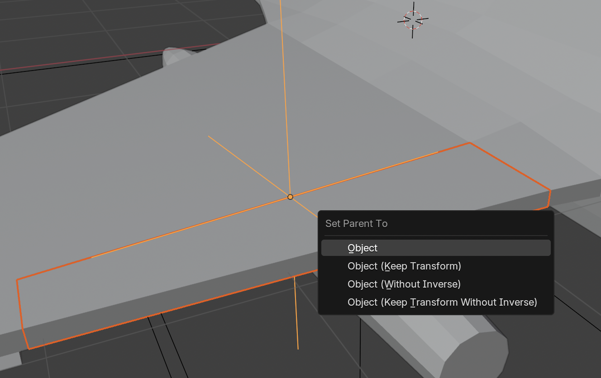
- You should see on the right that the object is nested under its parent empty element.
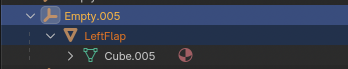
- Now, switch to the
Localorientation.
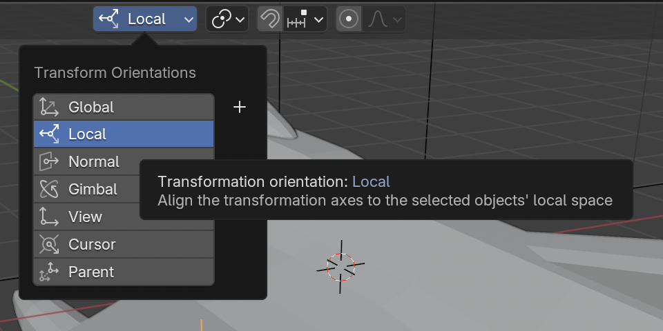
- Rotate the parent empty element along the desired axis. You’ll see that the object will rotate along with it too.
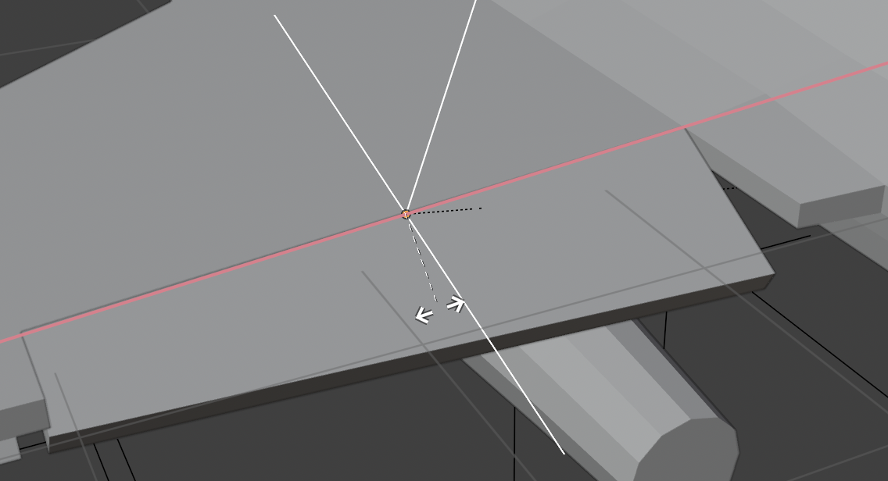
Method-3: By changing the local axis
This method is the most direct and intuitive way to manipulate the
axes of orientation of an object. Each object has a origin point that
has local axes. You can see an object’s origin (orange)
point when you select it in the object mode. You can also see the local
axes of the origin by enabling Affect Only Origings under
Options as shown below.
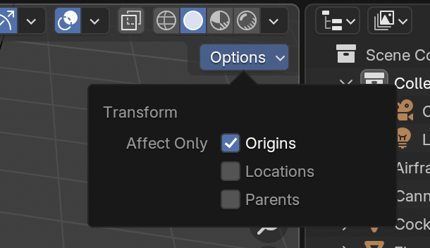
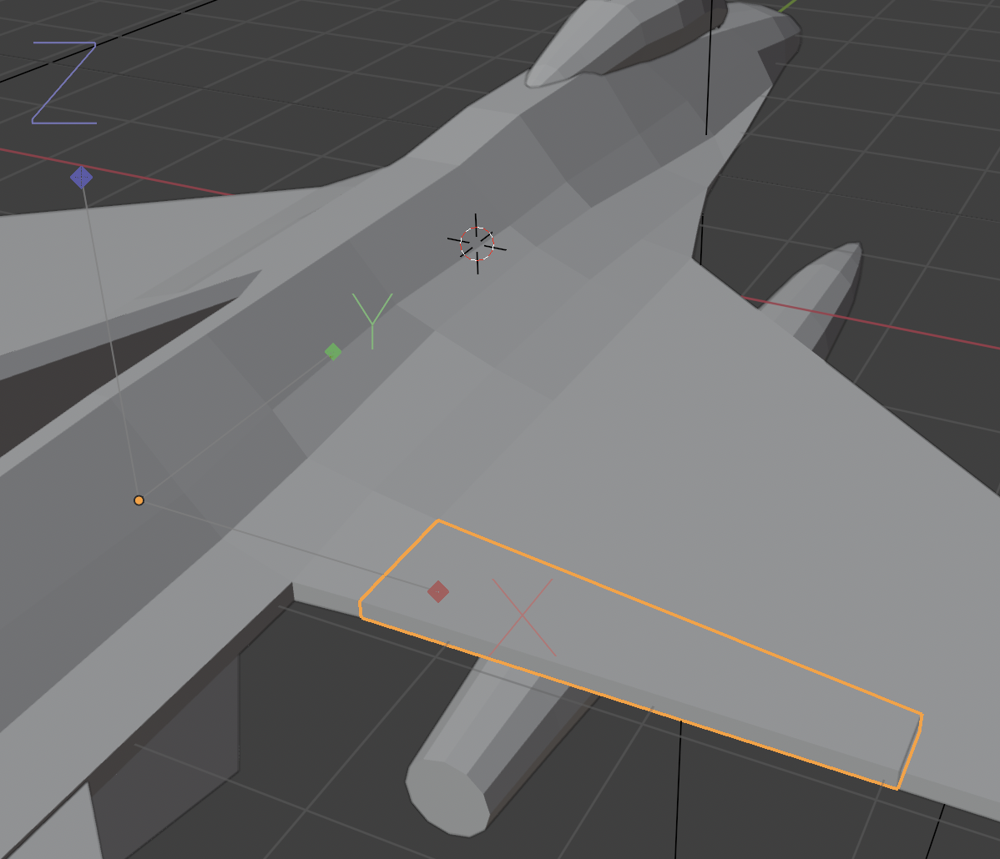
- With this option enabled, you can move and rotate the origins of the
selected objects. Move and rotate the origin using
GandRkeys until one of its axes aligns with the edge around which you want to rotate the object.
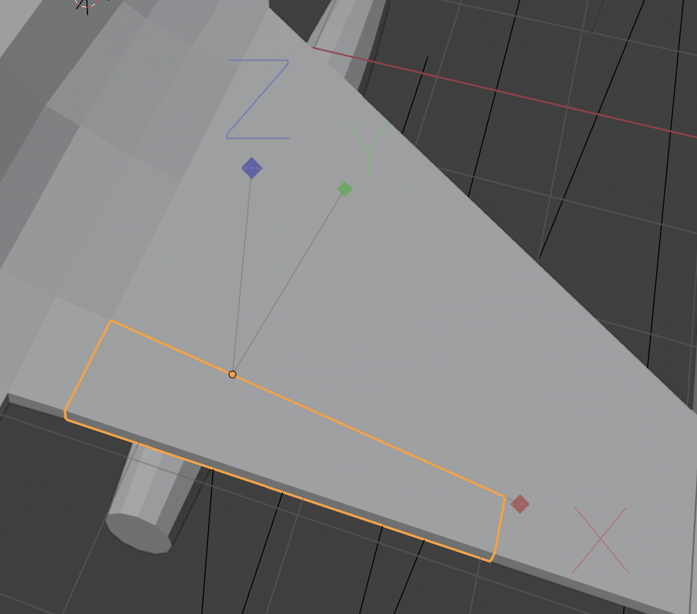
Disable the
Affect Only Originsoption and switch to theLocalorientation.Now you can move your object along the desired edge by simply using its new modified origin.
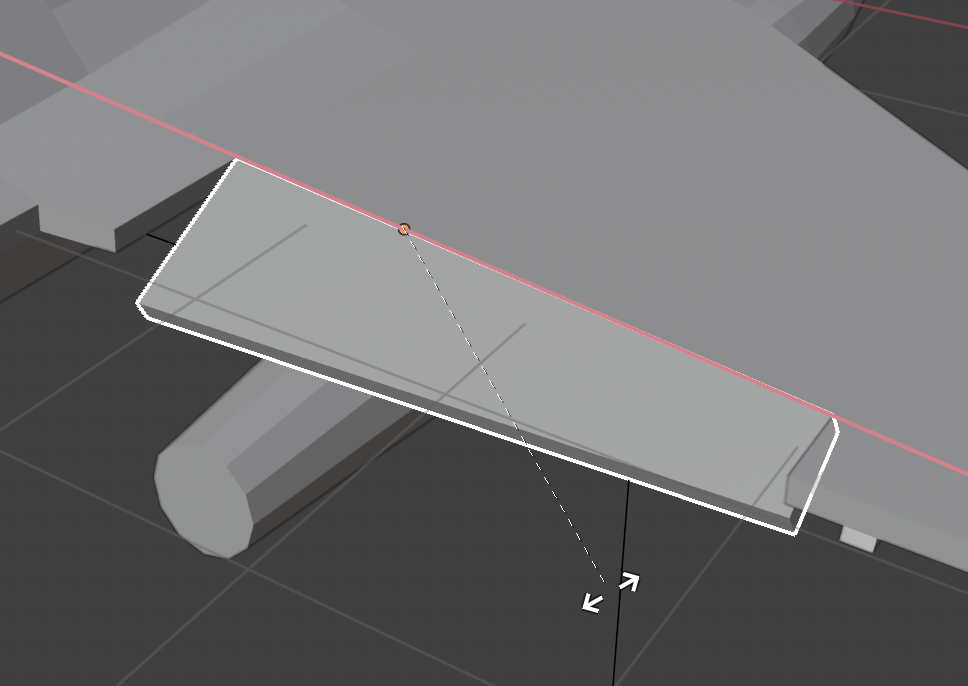